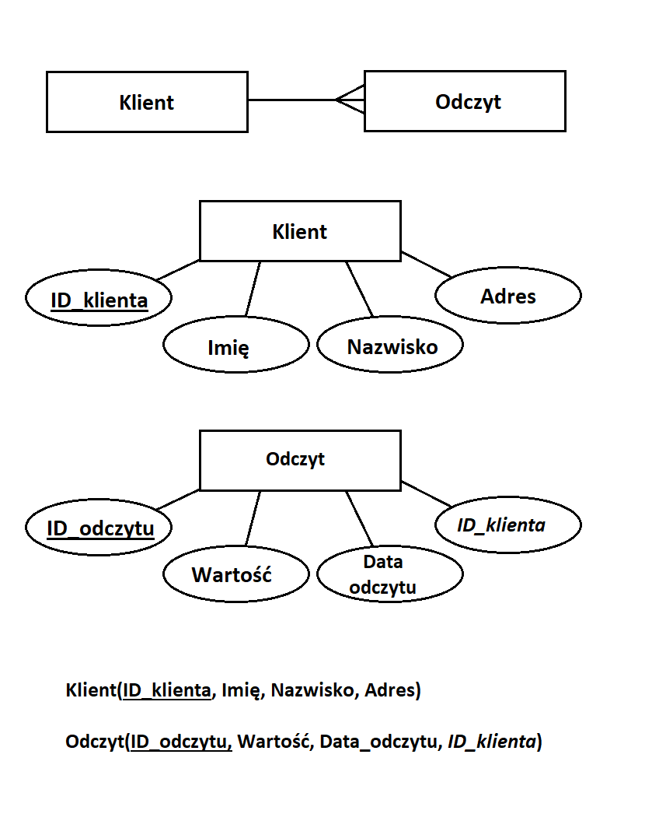
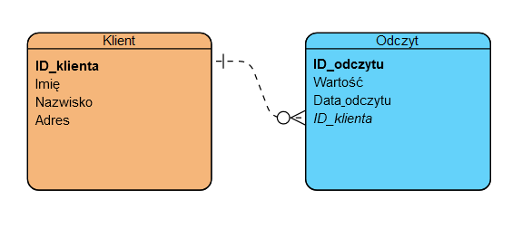

2. Instrukcja obsługi aplikacji klienckiej¶
- Authors:
Eryk Mika
- Version:
1.0 of 21.06.2023
- Course:
Databases I
Wybrane zagadnienie i przyjęty model danych¶
Wybrany przeze mnie scenariusz zakłada zbieranie danych o wartościach odczytów liczników u klientów. Zbierane informacje przechowywane są w dwóch tabelach (relacjach) - Klienci oraz Odczyty. Każdy klient ma unikatowy identyfikator (ID_klienta), z którym powiązany jest każdy odczyt na zasadzie klucza obcego. Model danych przedstawiłem za pomocą diagramów ERD w dwóch konwencjach. Oprócz tego zamieszczone są schematy relacyjne w postaci nawiasowej.
 {kind=link}
{kind=link}
Obsługa aplikacji klienckiej¶
Aplikacja została napisana w postaci pakietu Python wykonanego z użyciem narzędzia Poetry. Wykorzystany jest moduł sqlite3 do obsługi bazy danych. W celu uruchomienia programu należy uruchomić plik runner.py. Po uruchomieniu aplikacji użytkownik ma do wybrania kilka opcji, po których użytkownik może nawigować za pomocą znaków wprowadzanych z klawiatury.
Wyjście z programu
Usunięcie dotychczasowej bazy danych sqlite3
Dodawanie klientów lub odczytów
Wypisanie odczytów w konsoli
Usuwanie części dotychczasowych danych
Zapisanie danych do plików csv - klienci.csv oraz odczyty.csv
Dodawane odczyty mają domyślną aktualną datę pobraną z urządzenia. Podczas ich dodawania użytkownik może pomocniczo wyświetlić listę klientów (aby dopasować dane ID klienta). Podobnie podczas usuwania danych można wyświetlić rekordy obecne w bazie danych. Wypisywanie odczytów w konsoli polega na wypisaniu krotek składającyh się z ID klienta, adresu, odczytanej wartości oraz daty odczytu.
Istotne jest ograniczenie, że odczyt nie może być wprowadzony dla klienta, który nie istnieje jeszcze w bazie danych. Próba takiego zapisu zakończy się komunikatem o błędzie. Jednocześnie usunięcie klienta z bazy danych powoduje usunięcie wszystkich powiązanych z nim odczytów.